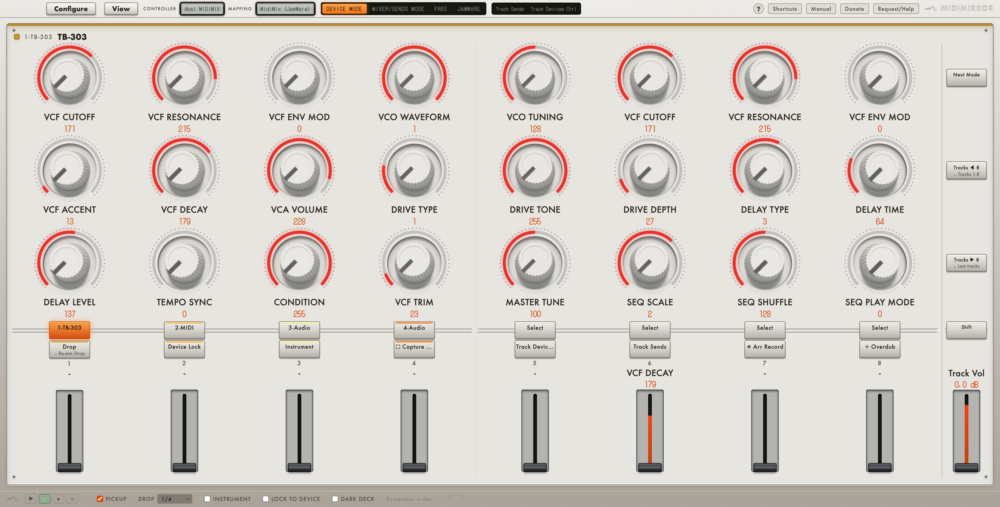
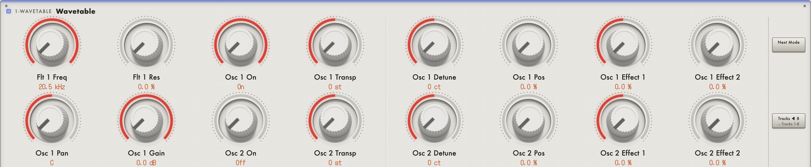
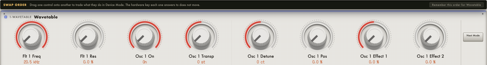
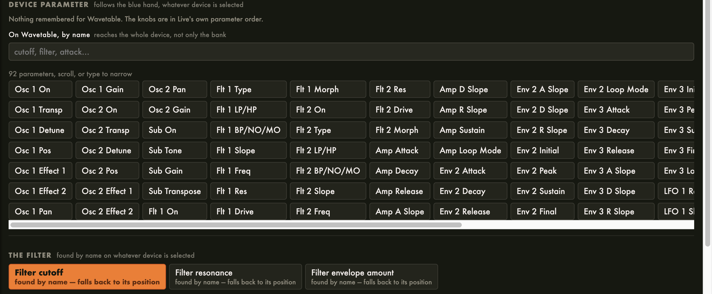
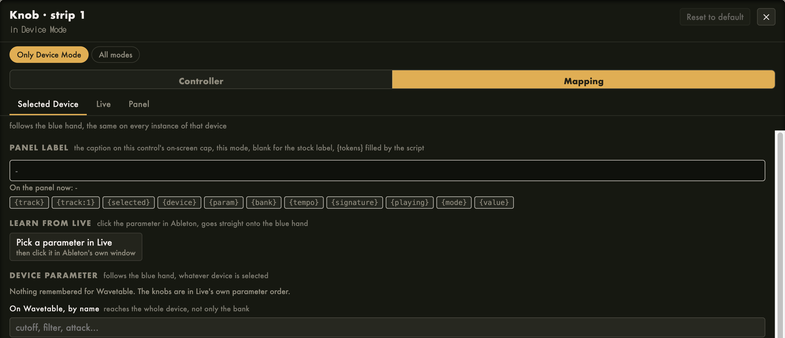
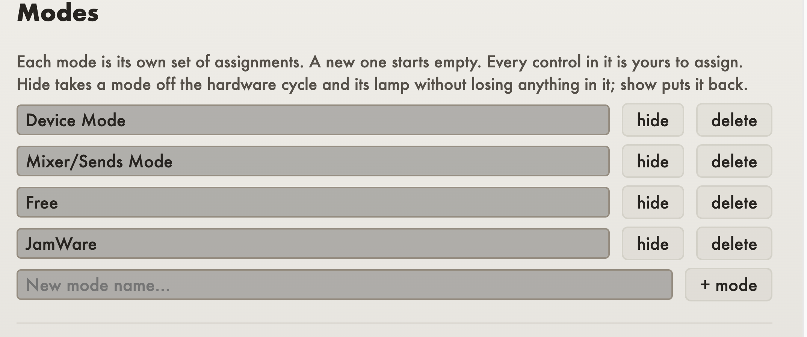
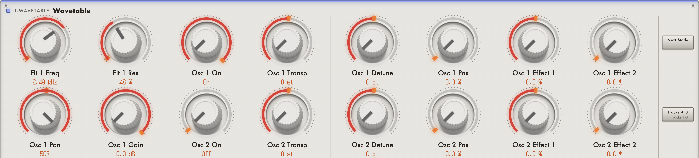

MidiMirror
A mirror for your hardware MIDI controller: see the exact values of your knobs, and customise what each one does.
Getting a MIDI controller to do what you actually want in Ableton Live means either settling for whatever its factory script decided, or writing a Remote Script in Python. Using the preconfigured remote scripts that come with each controller often leaves you limited in functionality and limited to your memory about what each knob does at any time.
MidiMirror is the third option. Double-click a knob on screen, pick what it should do, and it does it. Build your own modes, put two jobs on one key, then generate a real Remote Script for your controller and use it like any other. The window stays open as a live mirror of the hardware, every control and every value labelled with what it reaches right now. Create the exact layout of your midi controller, with full ability to customise the layout exactly according to your midi controller and put it in a display above your midi controller and it solves the problem of having to guess or memorise what every knob does in your Live project.


Every device keeps its own layout
Save device mode configurations for each specific device. Happy with your set-up for a particular device, say Ableton's Analog, or a VST like Diva, Serum or a TB-303? Hit the save device configuration button and MidiMirror will remember the exact order you set up for that device, so each parameter will always land in the same spot on that device in future.
It is a fact about the device, not about the set: the order you settled on for Diva comes back on every Diva in every project, on any track, without you saving a template or re-mapping a thing. Drag two knobs onto each other with Swap order until the row reads the way you think, then press the button and it is that device's layout from then on. A Forget button appears beside it on any device you have already taught, to hand it back to Live's own parameter order.


A controller you design yourself
Double-click any control and choose its job: a mixer function on this strip or a named track, a parameter of the selected device by position or by name, an envelope stage found by name on whatever instrument is in front of it, or one exact parameter on one exact device on one exact track, written out in full.

Your own modes. The three that ship (Device/Track, Mixer/Sends, Free) are a starting point, not a limit. Add modes, rename them, delete them. A new one starts empty and every control in it is yours to assign. Assignments belong to the mode you made them in, so a knob can do one thing while you are mixing and something unrelated while you are sound designing.
Holds and combos. A key can do one thing on the tap and another when held, edited separately. Two keys pressed together can do a third thing. You can also give a control a key on your typing keyboard.
Then generate the script. Name your controller and MidiMirror writes a real Remote Script package into Live's User Library under that name, so "Launch Control XL" turns up in Live's Control Surface list as its own entry. Everything you built comes across: assignments, labels, holds, modes, combos, the layout and the learned MIDI addresses.
The Akai MIDI Mix, the Novation Launch Control XL and the Novation Launch Control MK3 ship with a ready-made script, and a generic profile covers anything else. Any controller can be taught: press Learn on a control, move the real knob, and its true address is recorded.
And the drawing is yours too. EDIT LAYOUT turns the deck into a floor plan: drag controls into different cells (Shift-click takes a whole row, Alt-click a whole column), hide the ones your hardware does not have, add placeholders for the ones it does, and scale the whole panel to sit above the real thing. Swap order, in the footer, trades two controls' jobs when they are simply in the wrong places.

The drop
Press one key and the panel remembers where every knob and fader is standing. Build the track up however you like, sweep the filters, ride the sends, push it all into the red, then press the same key again and the whole thing snaps back at once.
While something is stored, every control that took part carries an orange mark at the value it will return to, a pip on a knob's ring or a line across a fader's well. That answers the only question worth asking mid-take: if I hit it now, what happens?

Hold the drop key to re-aim it. Keep it down, move whatever you want the return to land on, let go, and that is the new snap-back point. Nothing moves on the way in or out, so you can change where a drop returns to in the middle of a take without ever passing through the sound of the old one.
Two controllers, two windows
Run two controllers at once: two Control Surface slots in Live, each with its own generated script, and you get two windows, one per controller, both on screen together. Neither is a copy of the other: each draws its own hardware, keeps its own saved setups, layout and modes, and answers only to its own MIDI.
There is nothing to switch between, which is the point. A mirror is glanced at while your hands are busy, and a glance cannot click. The first time two are open they are placed side by side for you; move either one by hand and it is yours from then on, remembered per controller and per monitor, even if you unplug that screen in between. A window appears when its controller does and goes when it goes, so changing Live's Control Surface slots rearranges the windows to match with no restart, and it will not steal focus from Live to do it.
JamWare mode: your controller runs the other apps
Switch to JamWare mode and the panel becomes the front panel of another JamWare app. Every knob, fader and key fills with the parameters of whichever of Chordinator or MutationStation you last touched, named, with live values, in the app's own order. Turn a knob here and the app moves.
It follows focus the way device mode follows the blue hand: click into MutationStation and the panel is MutationStation's, click into Chordinator and it is Chordinator's. Nothing to select, no port to choose, and nothing to map: the parameters arrive already labelled. The app's own groups claim whole columns of the panel, so a switch sits directly beneath the knobs it changes, and a key bound to a switch lights to show whether it is on, both ways: flick it in the app's window and the key follows.
Nothing runs until you ask for it. MidiMirror announces itself only while this mode is showing and the apps publish only while it is, so leaving the mode closes the port on both sides. Free mode is untouched and still there beside it: that one hands your controls to Live's own MIDI map, while this one hands them to the app.
What else is in it
- Device lock. Pin the blue hand to one device and go on selecting other tracks without your knobs following.
- Instrument mode. Device mode follows the selected track's instrument instead of the blue hand, so the knobs land on the synth every time you change track.
- Layers over modes. Tap a bank key and one knob row becomes the selected track's sends, or the four utility devices every track carries. Everything else stays where it was.
- Ordered device control. The same knob does the same job on every instrument: cutoff, resonance and filter envelope first, then the device's own parameters, with the amp and filter envelopes on the faders.
- The master fader never moves job. It follows the selected track's volume in every mode, free mode included, so there is one level always under your hand whatever the panel is showing. Reassign it like anything else if you would rather it did something else.
- Free mode hands every control to Live's own MIDI map on its own virtual port, so you can MIDI-learn anything without the script in the way.
- Pickup. A knob does nothing until it passes the value it is taking over, which is what stops a jump when you switch modes or recall a drop.
- Transport on screen, for hardware that has no transport keys at all.
- Undo, saved setups, and a "This setup" page listing every control in every mode with what it does and the note or CC it sends, built by the script rather than written down.
Why standalone
MidiMirror runs as its own app, not a plugin, and reaches Live only through the Remote Script it generates, the same route any hardware controller's own script uses. That separation is deliberate. If Live crashes, MidiMirror and your panel layout are untouched, and if MidiMirror hits a snag, Live keeps running the set. Keeping the two apart means a crash in one is not a crash in the other.
Requirements
Ableton Live is required. This is the one tool in the range that does not work with any other DAW. Parameter names, the modes, the addressed device and the lock all come from a Remote Script, and only Live loads Remote Scripts.
macOS for the mirror app. The Akai MIDI Mix, the Novation Launch Control XL and the Novation Launch Control MK3 ship with ready-made scripts; any other controller works once you have learned its addresses and generated a script for it, which the app does for you.
Version 1.0.0
Setting it up
1. Install the app, and let it place its Remote Script in Live's
User Library on first launch.
2. In Live: Preferences → Link/Tempo/MIDI, and pick
MidiMirror as a Control Surface with the MIDIMIX
as its input and output.
3. Open the mirror on your second screen.
Move a knob and its name appears. Select a different device and every label follows.